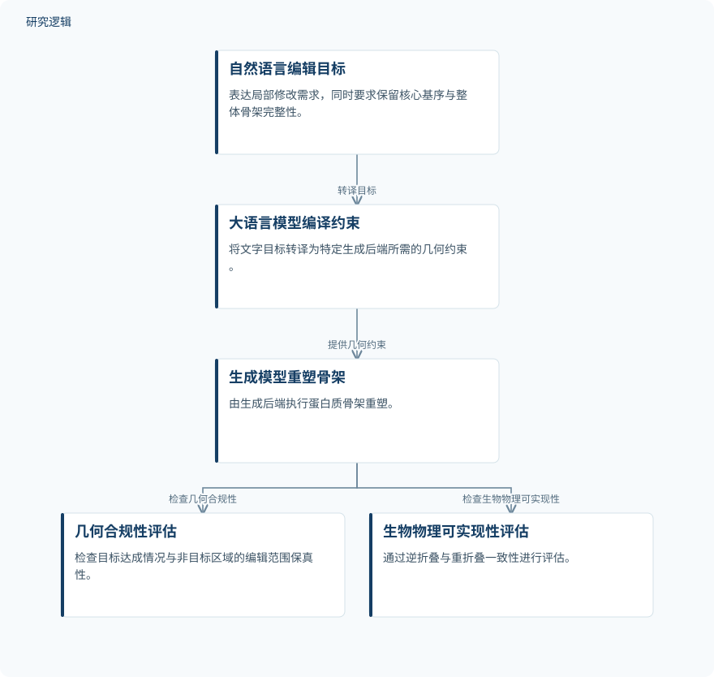

摘要解读
PROTEAN：超越从头生成的大语言模型智能体文本引导蛋白质结构编辑
PROTEAN: Beyond De Novo Generation - Can LLM Agents Perform Text-Guided Protein Structure Editing?
解读更新 2026-11-10 15:40 · 依据公开摘要整理，未核验全文细节
让大模型按文字要求修改蛋白质，难点不只是理解“改哪里”，还要保证“不该动的地方不动”，并让修改后的结构具备生物物理可实现性。PROTEAN将这些要求拆开评估，为判断文本引导的蛋白质编辑究竟卡在哪个环节提供了基准。
文章目录
从重新生成蛋白质，转向保留骨架的局部编辑
蛋白质工程通常从已有、经过表征的蛋白质出发，而非完全从头设计。研究者可能希望调整局部区域，以优化亲和力、改变免疫原性或改善稳定性，同时严格保留核心催化基序与整体骨架完整性。这些是摘要列举的编辑需求，并非本文已经验证的功能改善。
现有工作流往往需要人工指定复杂的底层参数，再跨生成后端反复采样与评估。自然语言能够表达高层目标，但结构生成模型不能直接理解这些要求；如何连接文字意图与几何操作，正是本文处理的问题。
用约束编译连接文字目标与骨架重塑
PROTEAN是文本引导蛋白质结构编辑的标准化基准，包含380个子任务，覆盖六类干预。其评估流程分为两个阶段：先由大语言模型把自然语言目标转译为特定后端所需的几何约束，再由生成模型重塑蛋白质骨架。
评估进一步区分几何合规性与生物物理可实现性。前者检查目标是否达成，以及非目标区域是否保持在允许的编辑范围内；后者通过逆折叠与重折叠一致性进行评估。几何上改对了，并不直接等于生物物理上可实现。
依据摘要整理的蛋白质编辑与分层评估示意


概括文字目标经约束编译与骨架重塑后接受不同层面评估的关系，不代表论文原图或具体实验配置。
下载 SVG图示关系说明
实线表示相邻阶段的信息流，虚线表示跨阶段联系或反馈。
自然语言编辑目标 → 大语言模型编译约束：转译目标；大语言模型编译约束 → 生成模型重塑骨架：提供几何约束；生成模型重塑骨架 → 几何合规性评估：检查几何合规性；生成模型重塑骨架 → 生物物理可实现性评估：检查生物物理可实现性
主要瓶颈落在编辑越界与重折叠失败
研究评估了五个前沿大语言模型与三个后端的配合。摘要报告，严格端到端生物物理成功率起点仅为7.0%。这一表述不宜扩展为所有组合的平均值，也不能据此判断最佳组合的表现。
消融研究显示，大语言模型的约束编译已具有较高准确性，主要瓶颈则是后端特有的编辑范围泄漏与重折叠失败。也就是说，指令能够被正确转译，并不保证后端只修改指定范围，也不保证生成结果通过后续一致性检验。
摘要尚不足以解释成功率的适用范围
摘要未提供蛋白质样本构成、各类任务分布、模型与后端名称，以及各组合的详细比较和判定阈值，因此无法判断结果对不同蛋白质或编辑难度的适用范围。380个子任务也不能直接理解为380个独立蛋白质样本。
摘要描述的生物物理评估依据是逆折叠与重折叠一致性，无法据此确认实验室层面的功能验证范围。这是当前材料的信息边界，不代表论文没有开展相关验证；开放测试平台的定位也不等于自主设计能力已经得到充分验证。
阅读启发：把理解指令与执行可靠性分开看
阅读启发：对大语言模型与生成式设计的结合，值得分别追问“约束是否译对”“修改是否越界”“结果是否可实现”。进一步阅读时，可重点查看编辑范围泄漏的定义、重折叠一致性的判据及不同后端的差异，而不宜仅凭文字理解能力推断端到端可靠性。
以上为本站阅读启发与建议，不是论文已验证的结论。